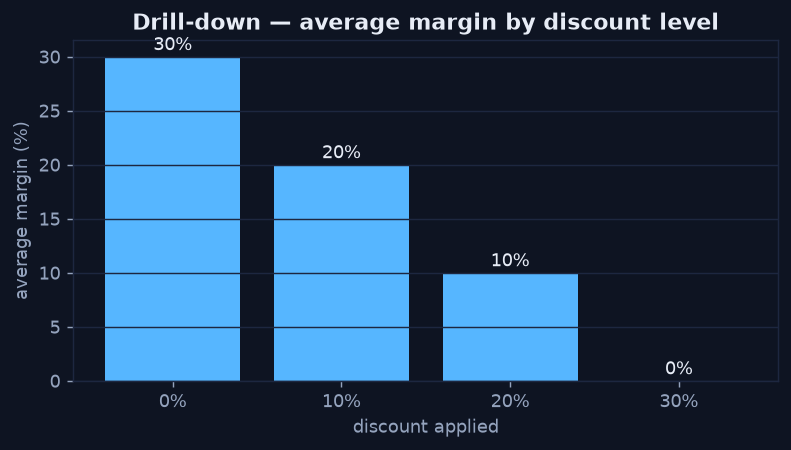

Drilling Down to Localize the Cause
Chapter 3 — Where Did It Actually Happen?
Aggregates hide their own explanation. "Margin is down" averages over every discount level, category, and region at once. Drill-down slices the metric by one dimension at a time until the change concentrates in a specific cell. That localization is usually 80% of the diagnosis: once you know where it happens, why is much easier to see.
Slice the Metric by the Suspect Dimension
The correlation and the t-test both pointed at discount. Drilling margin down by discount level makes the mechanism unmistakable: margin falls in a clean staircase from full price to the deepest discount, where it reaches zero. This isn't a vague "discounts hurt" — it's a precise, quantified relationship you can act on.
Python · pandas
# Average margin at each discount level
g = orders.groupby("discount")["margin"].mean() * 100
print(g) # 30% -> ~30% margin ... 0% margin at 30% discount
Margin falls in a clean staircase with each discount tier — at a 30% discount, margin is fully erased.
Drill-down in SQL — Slice and Subtotal
The same move in the warehouse uses GROUP BY with ROLLUP to get both the sliced
detail and the subtotals in one pass, sorted so the worst-performing cells surface at the top.
SQL
SELECT
category,
discount,
COUNT(*) AS orders,
AVG(profit / sales) AS avg_margin,
AVG(profit) AS avg_profit
FROM orders
GROUP BY ROLLUP (category, discount)
ORDER BY avg_margin; -- worst cells firstStop When It Localizes
Drill down one dimension at a time and stop as soon as the change concentrates. If margin had been flat across discount but cratered in one region, the region would be the story. Here it localizes cleanly to discount level — so the recommendation writes itself: control the deep-discount tiers. Crucially, region came back as a negative control (no association), which strengthens the case that discount, not geography, is the lever.